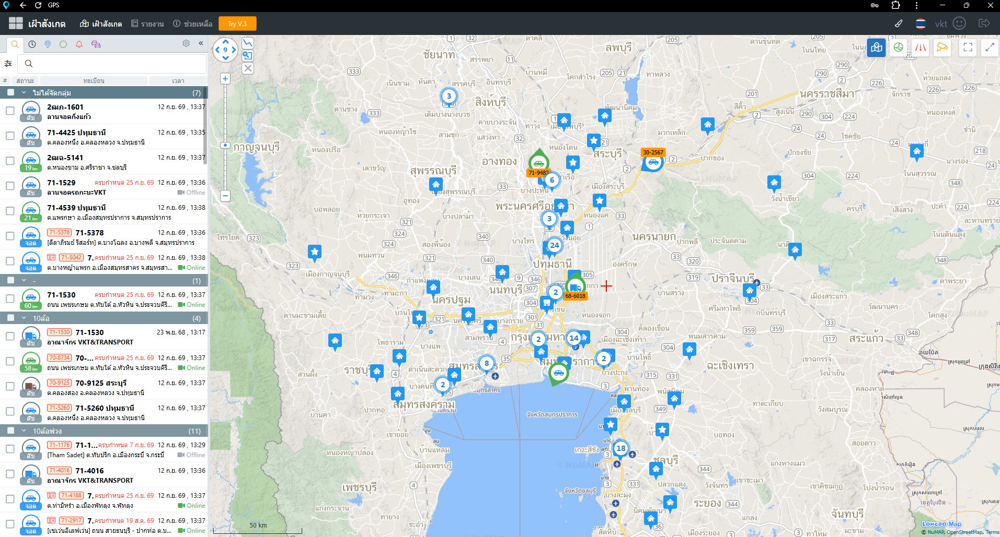

<section id="gprs" class="min-[100vh] flex flex-col justify-center items-center bg-gray-50 py-10 relative overflow-hidden">
    <!-- ปรับ max-w-6xl เพื่อไม่ให้จอแผ่กว้างเกินไปจนทำให้สัดส่วนความสูงล้นจอ -->
    <div class="max-w-6xl mx-auto px-4 sm:px-6 lg:px-8 w-full flex flex-col items-center">
        
        <!-- 📝 หัวข้อหลัก (บีบระยะห่าง mb-8 ให้กระชับขึ้น) -->
        <div data-aos="fade-down" class="text-center mb-6 lg:mb-8 max-w-3xl mx-auto">
            <h4 class="text-base lg:text-lg font-semibold text-gray-500 mb-1 tracking-wide">บริการเสริมการขนส่ง</h4>
            <h2 class="text-3xl md:text-4xl lg:text-5xl font-black text-green-600 mb-3">GPS TRACKING</h2>
            <p class="text-gray-600 text-sm md:text-base leading-relaxed">
                กล้องติดตัวรถรอบคันและระบบช่วยบอกตำแหน่งผ่านสัญญาณดาวเทียม เป็นอีกหนึ่งปัจจัยที่ทำให้ VKT & TRANSPORT ได้รับความไว้วางใจจากลูกค้าเสมอมา
            </p>
        </div>

        <!-- 🖥️ ส่วนหน้าจอจำลอง Command Center (ลดขอบให้บางลง) -->
        <div data-aos="zoom-in" data-aos-duration="1000" class="w-full mb-8 lg:mb-10">
            <div class="bg-[#111827] rounded-xl shadow-2xl overflow-hidden border border-gray-800 flex flex-col">
                
                <!-- แถบด้านบน (Header bar - บางลง) -->
                <div class="bg-[#1f2937] px-3 py-2 flex items-center border-b border-gray-800">
                    <div class="flex gap-1.5 mr-4">
                        <div class="w-2.5 h-2.5 rounded-full bg-red-500"></div>
                        <div class="w-2.5 h-2.5 rounded-full bg-yellow-500"></div>
                        <div class="w-2.5 h-2.5 rounded-full bg-green-500"></div>
                    </div>
                    <span class="text-gray-400 text-xs font-semibold tracking-wider flex-grow text-center pr-8">VKT Logistic Tracking System</span>
                </div>

                <!-- พื้นที่แสดงผล (ลด padding p-2 md:p-3 ให้ขอบจอบางลง) -->
                <div class="p-2 md:p-3 bg-[#0b0f19] grid grid-cols-1 md:grid-cols-2 gap-2 md:gap-3">
                    
                    <!-- จอซ้าย: แผนที่ GPS Tracking -->
                    <div class="relative w-full rounded-lg overflow-hidden border border-gray-700">
                        
                        <div class="absolute top-2 left-2 flex items-center gap-1.5 bg-black/80 backdrop-blur-sm px-2 py-1 rounded text-[10px] text-green-400 border border-green-500/30">
                            <i class="fa-solid fa-location-crosshairs animate-pulse"></i> Live GPS
                        </div>
                    </div>

                    <!-- จอขวา: วิดีโอกล้อง MDVR 4 มุม -->
                    <div class="relative w-full rounded-lg overflow-hidden border border-gray-700 bg-black">
                        <video autoplay loop muted playsinline class="w-full aspect-[16/9] object-cover opacity-90 hover:opacity-100 transition-opacity duration-300">
                            <source src="Videosps.mp4" type="video/mp4">
                        </video>
                        <div class="absolute top-2 left-2 flex items-center gap-1.5 bg-black/80 backdrop-blur-sm px-2 py-1 rounded text-[10px] text-yellow-400 border border-yellow-500/30">
                            <i class="fa-solid fa-video"></i> MDVR 4-CH
                        </div>
                    </div>

                </div>

                <!-- แถบสถานะด้านล่าง (บางลง) -->
                <div class="bg-[#102a1f] px-4 py-2 flex items-center justify-between border-t border-[#1a402e]">
                    <div class="flex items-center gap-2">
                        <div class="w-2 h-2 rounded-full bg-green-500 animate-pulse shadow-[0_0_5px_#22c55e]"></div>
                        <span class="text-green-500 text-[10px] md:text-xs font-medium">System Online</span>
                    </div>
                    <span class="text-green-500 text-[10px] md:text-xs font-black tracking-widest">REAL TIME MONITORING</span>
                </div>

            </div>
        </div>

        <!-- 📌 ส่วนฟีเจอร์ 3 ข้อความ (เปลี่ยนเป็นแนวนอน เพื่อประหยัดพื้นที่แนวตั้ง) -->
        <div data-aos="fade-up" class="grid grid-cols-1 md:grid-cols-3 gap-4 w-full">
            
            <!-- ฟีเจอร์ 1 -->
            <div class="bg-white p-4 rounded-xl shadow-sm border border-gray-100 hover:shadow-md transition-shadow flex items-center gap-4">
                <div class="w-12 h-12 flex-shrink-0 rounded-lg bg-green-50 flex items-center justify-center border border-green-100">
                    <i class="fa-solid fa-location-crosshairs text-xl text-green-600"></i>
                </div>
                <div>
                    <h4 class="text-sm md:text-base font-bold text-gray-900 mb-0.5">ติดตามแม่นยำ</h4>
                    <p class="text-gray-500 text-xs md:text-sm leading-snug">ระบุตำแหน่งปัจจุบันของรถบรรทุกแบบ Real Time ได้อย่างแม่นยำ</p>
                </div>
            </div>

            <!-- ฟีเจอร์ 2 -->
            <div class="bg-white p-4 rounded-xl shadow-sm border border-gray-100 hover:shadow-md transition-shadow flex items-center gap-4">
                <div class="w-12 h-12 flex-shrink-0 rounded-lg bg-green-50 flex items-center justify-center border border-green-100">
                    <i class="fa-regular fa-clock text-xl text-green-600"></i>
                </div>
                <div>
                    <h4 class="text-sm md:text-base font-bold text-gray-900 mb-0.5">ตรงต่อเวลา</h4>
                    <p class="text-gray-500 text-xs md:text-sm leading-snug">คาดการณ์เวลาเข้ารับ-ส่งสินค้า ให้ตรงตามนัดหมายลูกค้า</p>
                </div>
            </div>

            <!-- ฟีเจอร์ 3 -->
            <div class="bg-white p-4 rounded-xl shadow-sm border border-gray-100 hover:shadow-md transition-shadow flex items-center gap-4">
                <div class="w-12 h-12 flex-shrink-0 rounded-lg bg-green-50 flex items-center justify-center border border-green-100">
                    <i class="fa-solid fa-shield-halved text-xl text-green-600"></i>
                </div>
                <div>
                    <h4 class="text-sm md:text-base font-bold text-gray-900 mb-0.5">โปร่งใส ตรวจสอบได้</h4>
                    <p class="text-gray-500 text-xs md:text-sm leading-snug">ตรวจสอบพฤติกรรมการขับขี่ได้ 24 ชั่วโมง เพื่อความปลอดภัย</p>
                </div>
            </div>

        </div>

    </div>
</section>